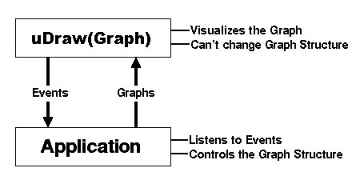

Getting started: Introduction to the API
After becoming acquainted with uDraw(Graph), you might wish to have a similar user interface for an application program you have developed on your own. Until now, you have been afraid of the cost of such an expensive implementation. Imagine how the user will be able to handle your complicated graph data structure by easily interacting with an elegant and intuitive graph drawing of high quality! How about controlling your application by simply clicking on nodes and edges in a graph visualization? This is the typical scenario where you want to start using the API to plug uDraw(Graph) on top of your application program.
First of all, uDraw(Graph) does not control the structure of a displayed graph. It is a pure visualization system and is unable to alter the graph structure on its own. So unlike usual graph editors (which may take control on the structure of a graph by offering arbitrary creation and removing operations on nodes and edges without any notion about the specific underlying graph semantics), uDraw(Graph) lets your application decide what operations need to be applied when nodes and edges are selected in a visualization or when menus and icons are chosen in a particular context. Therefore the application program has to maintain its own graph data structure in order to be able to send it on demand to uDraw(Graph) for visualization.
It is a primary concept of the uDraw(Graph) architecture to have two levels of responsibility:
- The visualization layer (uDraw(Graph)), responsible for graphical representation, but without permission to manipulate the graph structure on its own.
- The application layer (some program connected to the API) which decides what to do if an operation that modifies the graph structure should be applied.
The following figure illustrates the data flow between an application program and uDraw(Graph):

API data flow
An application is connected with the uDraw(Graph) API using two communication channels: One to send commands (e.g. graphs) and one to receive the answers (e.g. events). With API commands, the application is able to initiate virtually any uDraw(Graph) operation, for example sending graphs for visualization or attaching additional dialog elements (i.e. menus and icons) to the uDraw(Graph) user interface. Afterwards, the application has to wait for answers from the API. These are events triggered by user interaction in the base windows. By being informed about these events, the application can decide about the particular operations that have to be applied on its own local graph data structure. For example, if the user has selected a node before invoking an application menu named "Delete Node" (added to the uDraw(Graph) user interface by the application before), then the application can decide from the events that the user is asking to remove the selected node. After carrying out the required operation on its own data structure, the application has to send the new graph (or an incremental update) to the API in order to renew the graph visualization.